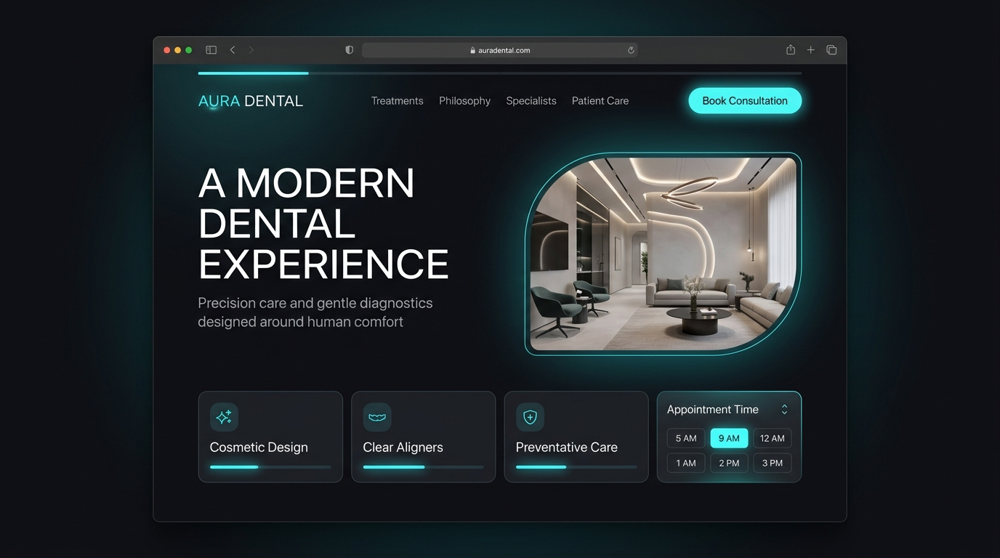
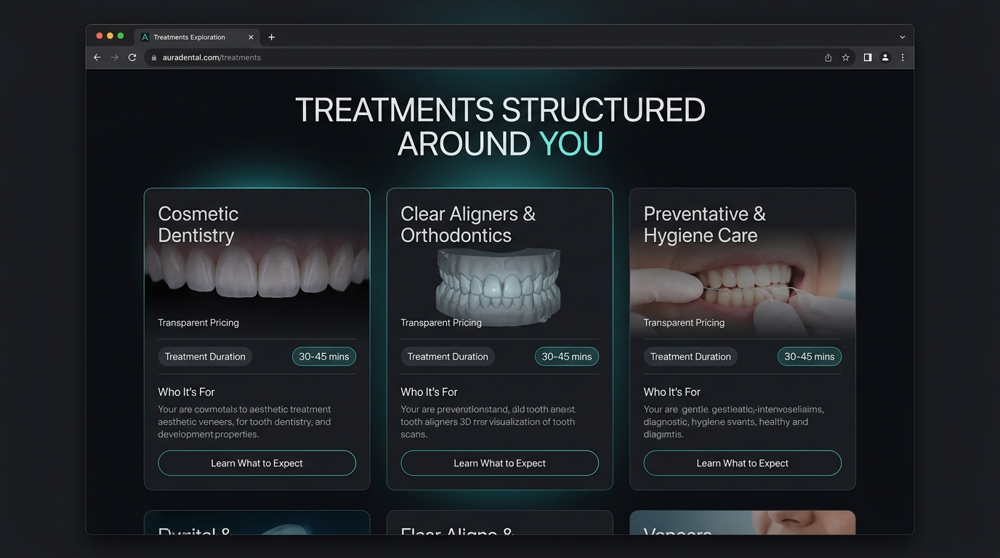
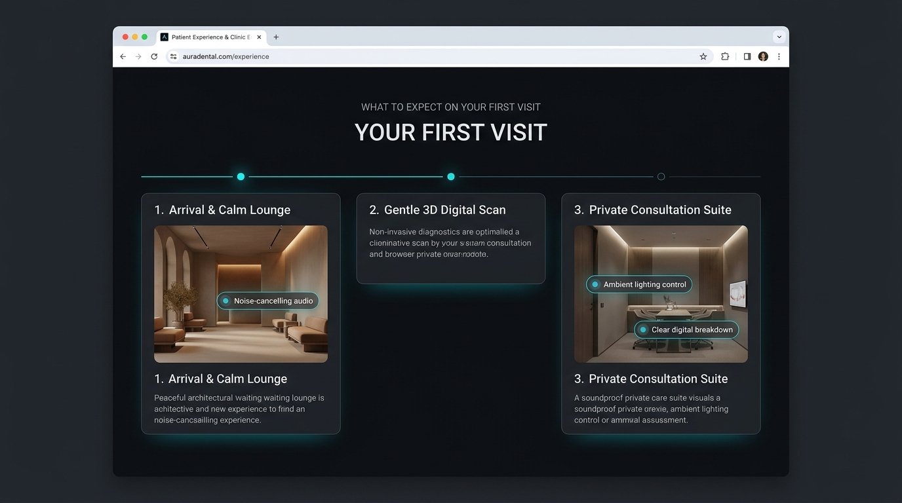
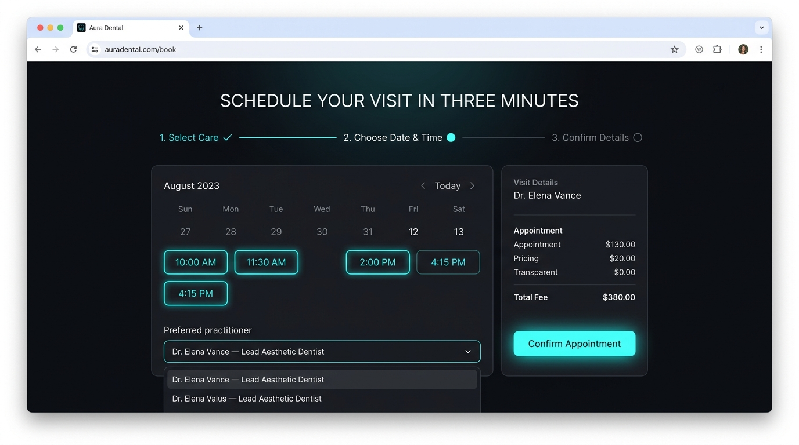

01 / HOMEPAGE
A CALMER FIRST IMPRESSION
The homepage immediately communicates what the clinic stands for, what patients can expect and where to take the next step.

Most dental websites communicate treatments. This concept explores how a dental website can communicate confidence, comfort and clarity before a patient ever walks through the door.
Choosing a dentist can feel unfamiliar. Patients want to know who they are trusting, what will happen, what treatment they may need and how much the experience will disrupt their routine.
This concept uses calm visual hierarchy, transparent treatment information and a simplified booking journey to remove unnecessary friction.
Treatment lists can overwhelm visitors before they understand what matters to them.
Patients need confidence in the people, environment and process — not just a list of procedures.
If taking the next step feels complicated, visitors may postpone it.
The visual system intentionally avoids the overly clinical feeling common in healthcare interfaces. Soft spatial layouts, restrained contrast and focused calls-to-action create a calmer digital environment.
Generous layouts reduce visual pressure.
Treatments and important information are structured around what patients need to know.
The next step is always easy to understand.
Every screen is designed around one goal: helping the patient move from uncertainty to confidence.
The homepage immediately communicates what the clinic stands for, what patients can expect and where to take the next step.

Treatments are structured around patient questions rather than simply listing procedures. Visitors can understand what a treatment is, who it is for and what to expect.

From the clinic environment to the treatment journey, the interface uses visual storytelling to make an unfamiliar experience feel more understandable.

The booking experience is intentionally simple: choose the service, select a convenient time and confirm the appointment without unnecessary steps.

Important actions remain visible without competing with the content.
Primary actions use a consistent visual language throughout the experience.
Large, readable type creates hierarchy without overwhelming the visitor.
Generous spacing creates a calmer healthcare experience.
"How thoughtful digital design can make a traditionally clinical experience feel clearer, calmer and more human."
Build confidence before asking for the appointment.
Give patients the information they actually need.
Every visual decision should serve the journey.
Self-initiated concept created by AXILYN. This project is an exploration of digital experience design and is not a commissioned client project.
Let's turn your idea, brand or business into a digital experience people remember.
BUILD WITH AXILYN →